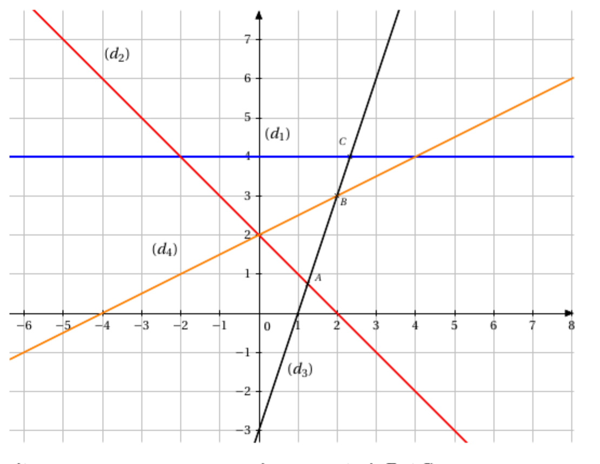

Ces exercices sont ceux donnés dans les autres sections.
Chapitre 1: Outils et techniques calculatoires #
Exercice 1.1 #
Effectuer les opérations suivantes et simplifier au maximum
| $\dfrac{2}{3} + \dfrac{1}{6}$ | $\dfrac{2}{3} \times \dfrac{1}{6}$ | $3 \times \dfrac{5}{12}$ | $\dfrac{1}{5} - \dfrac{1}{3}$ | $3 - \dfrac{3}{10}$ |
|---|---|---|---|---|
| $\dfrac{1}{5} + \dfrac{2}{3} - \dfrac{4}{15}$ | $\left( \dfrac{1}{2} + \dfrac{2}{5} \right) \times \dfrac{2}{3}$ | $1 + \dfrac{1}{6} - \dfrac{1}{4}$ | $\dfrac{3}{\dfrac{3}{2}}$ | $\dfrac{\dfrac{3}{5} + \dfrac{1}{3}}{ \dfrac{2}{3} + \dfrac{6}{5}}$ |
| $\dfrac{\dfrac{2}{7} + \dfrac{5}{21}}{\dfrac{6}{7}}$ | $\dfrac{\dfrac{2}{3}}{ \dfrac{1}{6}}$ | $\dfrac{3}{5} \times \dfrac{12}{21}$ | $\dfrac{5}{21} + \dfrac{1}{7} - \dfrac{5}{3}$ | $\dfrac{2}{3} \left( \dfrac{1}{5} - \dfrac{1}{2} \right)$ |
Exercice 1.2 #
- Sur un pantalon étiqueté à 70€ on bénéficie d’une remise de 30%. À quel prix aura-t-on le pantalon ?
- Le plein de SP95 d’une voiture coûtait 70€. Après l’augmentation de 20% des prix à la pompe, quel sera le prix d’un plein ?
- Après réduction de 10% par le concessionnaire, la voiture coûte 18 900€. Quel était le prix d’origine ?
- Un particulier avait 100L d’eau dans une citerne. Après les pluies, la quantité d’eau dans la citerne a augmenté de 5% mais une sécheresse a suivi et la quantité d’eau a baissé de 15%. Quelle quantité d’eau reste-t-il dans la citerne ?
- Le prix d’une action augmente de 5% puis baisse de 5%. Globalement, le prix aura-t-il baissé ou augmenté ?
Exercice 1.3 #
Simplifier les expressions au maximum
- $2^3 \times 3^{-2} \times 2^{-5}$
- $\frac{5^3}{5^2} \times 5^4$
- $\frac{3^4 \times 3^{-2}}{3^6}$
- $(2^3)^{-2} \times 2^7 \times 2^{-1}$
- $(5^3)^2 \times \left(\frac{1}{5}\right)^{-6}$
- $\dfrac{(4^{-3})^2 \times 3^5}{3^2 \times (2^{-4})^3}$
Exercice 1.4 #
Écrire les nombres suivants sous forme scientifique
- 10 000
- 0,001
- 45,200
- 1287, 34
- 0,0005
- 540 000
- 123
- $\dfrac{30}{100}$
- $\frac{45}{1000}$
- $\frac{126}{3}$
Exercice 1.5 #
Résoudre les équations suivantes
- $x + 4 = 2x - 5$
- $-3x = x - \frac{1}{3}$
- $3 - 4x = 4x - 5$
- $5(x-1) + 2 = x - 4$
- $\frac{1}{2}(x - 1) = x - \frac{1}{2}$
- $\frac{2}{5}(x - 1) + x = 1$
- $\frac{2x - 3}{x} = 1$
- $\frac{x - 1}{2x} + \frac{x + 1}{x} = 0 \quad \text{pour} \quad x \neq 0$
- $\frac{x}{x+1} - \frac{x+1}{x-1} = 0 \quad \text{pour} \quad x \neq 1 \quad \text{et} \quad x \neq -1$
- $(2x - 1)(x + 5) = 0$
Exercice 1.6 #
Résoudre
- $x \times 1.04^{-2} = 3000 \times 1.04^{-4} + 7000 \times 1.04^{-5}$
- $x \times 0.05 \times \frac{90}{360} = 150$
- $2000 \times 0.06 \times \frac{x}{360} = 200$
- $10000 \times 1.08^{-4} = x \times 1.08^{-2} + 2x \times 1.08^{-5}$
- $x \times 0.06 \times \frac{60}{360} + x = 5050$
Exercice 1.7 #
Résoudre les inéquations suivantes (et donner les résultats sous forme d’intervalles)
- $4x - 2 < x + 1$
- $5 - x > -3x + 2$
- $\frac{3}{4}(x - \frac{2}{3}) < x + 1$
- $2(x-1) - 3x \geq -3$
- $\frac{2}{3}x + 1 \leq x$
- $-\frac{1}{5}x \leq \frac{2}{5} + 2x$
- $(x+2)(x-1) \geq 0$
- $(1-x)(x+5) < 0$
- $(x-3)(x+1) \leq 0$
- $\frac{x}{x+1} - \frac{x+1}{x-1} \geq 0 \quad \text{pour} \quad x \neq 1 \quad \text{et} \quad x \neq -1$
Exercice 1.8 #
Factoriser les expressions suivantes en utilisant les identités remarquables
- $A_1(x) = x^2 + 6x + 9$
- $A_2(x) = x^2 - 12x + 36$
- $A_3(x) = 4x^2 - 9$
- $A_4(x) = 25 - 10x + x^2$
- $A_5(x) = x^2 - 4x + 3 \quad \text{(on remarquera que 3 = 4-1)}$
- $A_6(x) = 5x^2 - 20$
Exercice 1.9 #
Pour chaque expression $A_i(x)$, développer, factoriser puis résoudre $A_i(x) = 0$.
- $A_1(x) = (x-5)(2x+1) + (x+5)(2-x)$
- $A_2(x) = (x+1)^2 - (x+1)(x+4)$
- $A_3(x) = (2x-1)^2+(5x+1)(2x-1)+ (4x^2-1) \quad \text{on factorisera 4x}^2-1$
- En choisissant la « bonne » expression, résoudre $A_3(x) = -1$, calculer $A_3(0.5)$.
- $A_4(x) = (3x+1)^2 - 2(9x^2-1) - (3x+1)(5x+3) \quad \text{on factorisera 9x}^2-1$
- $A_5(x) = 2(x-2)(x+1) + (x^2-4) - 3(1-x)(4-2x) \quad \text{on factorisera x}^2 - 4 \text{ et } 4 - 2x$
- $A_6(x) = 2(x+1) - (x+1)(4x+3) + x^2 - 4x + 2x - 4$
- $A_7(x) = (2x+1)^2 - (x-3)^2$
- $A_8(x) = (3x-1)^2 - 9x^2+1 - (x-5)(3x-1)$
- En choisissant la bonne expression, résoudre $A_8(x) > 0$
Exercice 1.10 #
Résoudre algébriquement les systèmes
$$ \left\{ \begin{aligned} 2x - y &= 1 \\ -4x + 3y &= 7 \end{aligned} \right. $$
$$ \begin{cases} 2x + y = 1 \\ -4x - 2y = -3 \end{cases} $$
$$ \begin{cases} 2x - 3y = 7 \\ x + 5y = -3 \end{cases} $$
$$ \begin{cases} -0.5x + y = 1 \\ 2x - 4y = -4 \end{cases} $$
(Pour ceux qui sont à l’aise, résoudre géométriquement également).
Exercice 1.11 #
Dans un magasin, tous les articles d’une même catégorie sont au même prix. Pierre et Clothilde décident d’acheter des DVD et des BD. Ils possèdent chacun 75€. Pierre achète un DVD et 4 BD ; il lui reste 14,50€. Clothilde dépense 73,50€ pour 2 DVD et 3 BD. Calculer le prix de chaque article.
Exercice 1.12 #
Une entreprise artisanale fabrique deux types d’objets en bois, notés A et B. Un objet de type A nécessite 3 kg de bois et un objet de type B nécessite 5 kg de bois. Pendant une journée, l’entreprise a utilisé 163 kg de bois pour fabriquer 43 objets. Déterminer le nombre d’objets réalisés pour chaque type.
Exercice 1.13 #
Interpréter graphiquement (en termes de parabole – forme, sommet - et d’intersection avec les axes). Mettre chacune des expressions du second degré sous forme canonique.
- $x^2 - 4x + 3 = 0$ puis $x^2 - 4x + 3 \ge 0$
- $x^2 - x + 1 = 0$ puis $x^2 - x + 1 < 0$
- $-x^2 - x + 2 = 0$ puis $-x^2 - x + 2 \le 0$
- $-2x^2 - 11x + 21 = 0$ puis $-2x^2 - 11x + 21 \le 0$
- $x^2 - 10x + 25 = 0$ puis $x^2 - 10x + 25 \ge 0$
- $-x^2 - 2x - 2 = 0$ puis $-x^2 - 2x - 2 < 0$
- $4x^2 - 4x + 1 = 0$ puis $4x^2 - 4x + 1 > 0$
Exercice 1.14 #
- Factoriser les polynômes $x^2 - x - 6$ et $2x^2 + 3x - 2$
- Résoudre l’équation
$$ \dfrac{2}{x^2 - x - 6} + \frac{x}{2x^2 + 3x - 2} = 0 $$
Exercice 1.15 #
- a) Résoudre l’équation $2x^2 + 5x + 2 = 0$ b) En utilisant un changement d’inconnue, en déduire les solutions de l’équation
$$ 2x^4 + 5x^2 + 2 = 0 $$
c) En utilisant un changement d’inconnue, en déduire les solutions de l’équation
$$ \frac{2}{(x - 1)^2} + \frac{5}{x - 1} + 2 = 0 $$
- Par une méthode analogue, résoudre l’équation $x + 5\sqrt{x} - 3 = 0$
- Par une méthode analogue résoudre $x^4 - 4x^2 + 3 = 0$
Exercice 1.16 #
Les questions sont indépendantes
-
On considère le trinôme suivant : $(m+3)x^2 + 2(3m+1)x + (m+3)$
Pour quelles valeurs de $m$ ce trinôme a-t-il une racine double ? Calculer alors cette racine.
-
On considère le trinôme suivant : $x^2 - (2m+3)x + m^2$
Pour quelles valeurs de $m$ ce trinôme a-t-il une racine double ? Calculer alors cette racine.
-
On considère l’équation $2x^2 - (m+2)x + m - 2 = 0$
Calculer $m$ pour que l’une des solutions soit égale à 3. En déduire l’autre solution de l’équation.
Exercice 1.17 #
On considère la fonction $f$ définie sur $\mathbb{R}$ par $f(x) = 3x^3 - 4x^2 - 25x + 42$.
- Montrer que -3 est une solution de $f(x) = 0$.
- Développer, ordonner et réduire $(x + 3)(ax^2 + bx + c)$.
- Déterminer trois réels $a$, $b$ et $c$ tels que $f(x) = (x + 3)(ax^2 + bx + c)$ pour tout réel $x$.
- Résoudre $f(x) = 0$.
Exercice 1.18 #
On considère la fonction $g$ définie sur $\mathbb{R}$ par $g(x) = x^3 + 5x^2 - 12x + 6$.
- Montrer que 1 est solution de $g(x) = 0$.
- Déterminer trois $a$, $b$ et $c$ tels que $g(x) = (x - 1)(ax^2 + bx + c)$ pour tout réel $x$.
- En déduire le signe de $g(x)$.
Exercice 1.19 #
On considère la fonction $h$ définie sur $\mathbb{R}$ par $h(x) = x^2 - ax + 3$ où $a$ est un nombre réel.
- Déterminer les valeurs de $a$ pour lesquelles l’équation $h(x) = 0$ admet deux racines distinctes.
- Déterminer les valeurs de $a$ pour lesquelles l’équation $h(x) = 0$ admet une racine double.
- Déterminer les valeurs de $a$ pour lesquelles l’équation $h(x) = 0$ n’admet pas de racine.
- Déterminer les valeurs de $a$ pour lesquelles le minimum de $h$ est strictement inférieur à -1.
Exercices du chapitre 2 (Droites) #
Exercice 2.1 #
Tracer les droites suivantes de la manière la plus rapide possible (et indiquer les droites parallèles, perpendiculaires en justifiant) :
- $d_1 : 2x + y = 3$
- $d_2 : x = -1$
- $d_3 : y = \frac{1}{2}$
- $d_4 : y = -\frac{1}{2}x + 3$
- $d_5 : 2y - x - 2 = 0$
- $d_6 : y - \frac{1}{3}x = \frac{5}{3}$
- $d_7 : y - 2x + 5 = 0$
- $d_8 : 2y = 3x$
- $d_9 : -x - y = 0$
- $d_{10} : y - \frac{1}{2}x - 3 = 0$
Exercice 2.2 #
Déterminer dans chacun des cas si les droites $d$ et $d’$ sont parallèles ou sécantes.
- $d$ a pour équation $2x+3y-5=0$ et $d’$ a pour équation $4x+6y+3=0$.
- $d$ a pour équation $-5x+4y+1=0$ et $d’$ a pour équation $6x-y-2=0$.
- $d$ a pour équation $7x-8y-3=0$ et $d’$ a pour équation $6x-9y=0$.
- $d$ a pour équation $9x-3y+4=0$ et $d’$ a pour équation $-3x+y+4=0$.
Exercice 2.3 #
On donne les points suivants : $A(2;-1), B(4;2), C(-1;0), D(1;3)$
- Déterminer une équation cartésienne de $(AB)$ et $(CD)$.
- Étudier la position relative de ces deux droites.
Exercice 2.4 #
Résoudre géométriquement les systèmes :
-
$$ \begin{cases} 2x - y = 1 \\ -4x + 3y = 7 \end{cases} $$
-
$$ \begin{cases} 2x + y = 1 \\ -4x - 2y = -3 \end{cases} $$
-
$$ \begin{cases} 2x - 3y = 7 \\ x + 5y = -3 \end{cases} $$
-
$$ \begin{cases} -0.5x + y = 1 \\ 2x - 4y = -4 \end{cases} $$
Exercice 2.5 #
-
Par lecture graphique, déterminer l’équation réduite des quatre droites représentées sur ce graphique
$~$
-
Déterminer par le calcul les coordonnées des points $A, B$ et $C$.
-
Vérifier graphiquement les réponses précédentes.
Exercice 2.6 #
On considère les points $A(0, 1)$, $B(3, 3)$ et $C(4, -3)$ :
- Placer ces points dans un repère orthonormal.
- Déterminer une équation de la droite $(AB)$ et de la droite $(AC)$.
- Déterminer, par le calcul, une équation de la droite $(BC)$.
- Déterminer une équation de la parallèle à $(AB)$ passant par $C$.
Exercice 2.7 #
On considère les points $A(-3;4), B(6;1), C(-2,1)$, $D(0;3)$
-
Placer ces points dans un repère orthonormé.
-
Le point $D$ est-il un point de $(AB)$ ? Justifier à l’aide d’un calcul.
-
La parallèle à $(AC)$ passant par $D$ coupe $(BC)$ en $E$.
a. Déterminer une équaion de la droite $(DE)$. b. Déterminer l’équation réduite de la droite $(CB)$. c. En déduire les coordonnées du point $E$.
Exercice 2.8 #
On suppose que la courbe de demande est décrite par une droite de la forme $q = mp + b$.
Déterminer son équation étant données les informations suivantes : un promoteur découvre que la demande en billets de théâtre est de 1200 lorsque le prix est de 60€ mais chute à 900 lorsque le prix est haussé à 75€.
Exercice 2.9 #
La quantité et le prix d’équilibre d’un bien sont déterminés par l’intersection des courbes de l’offre et de la demande. Pour un produit donné, l’offre est déterminée par la droite :
$$ q_{\text{offre}} = 30p - 45 $$
Et la demande, pour ce même produit, par la droite :
$$ q_{\text{demande}} = -15p + 855 $$
Déterminer le prix et la quantité d’équilibre et tracer, sur un même graphique, les courbes de l’offre et de la demande.
Exercice 2.10 #
Une compagnie produit des chaussures. Lorsque 30 chaussures sont produites, le coût total de production est de 325€. Lorsque 50 chaussures sont produites, le coût s’élève alors à 485€. Quelle est l’équation du coût $C$ si celui-ci varie de façon linéaire en fonction du nombre de chaussures produites $q$ ?
Exercice 2.11 #
Dans chacun des cas, représenter le demi-plan :
- $x \geq -1$
- $y < 3$
- $2x + y \geq 0$
- $y - 3x + 2 \leq 0$
- $2y + x - 3 > 0$
Exercices du Chapitre 3 (Suites) #
Exercice 3.1 #
Parmi les suites suivantes, indiquer celles qui sont arithmétiques, géométriques.
$$ \begin{cases} u_0=7\\ u_{n+1} = u_n^2 \end{cases} ,\qquad \begin{cases} v_0=100\\ v_{n+1} = v_n+\dfrac{6}{100}v_n \end{cases} ,\qquad \begin{cases} w_0=1\\ w_{n+1} + w_n = 1 \end{cases} ,\qquad \begin{cases} t_0=33\\ t_{n+1} - t_n = 4 \end{cases} ,\qquad $$Exercice 3.2 #
- $\quad 6, 10, 14$ peuvent-ils être les 3 premiers termes d’une suite arithmétique ? Justifier.
- $\quad 5, 25, 120$ peuvent-ils être les 3 premiers termes d’une suite géométrique ? Justifier.
Exercice 3.3 #
On suppose que $(u_n)_{n \in \mathbb{N}}$ est une suite arithmétique.
- On sait que $u_0 = 2$ et $r = -3$. Calculer $u_{10}$, $u_{20}$.
- On sait que $u_0 = 2$ et $u_2 = 10$. Calculer $r$, $u_1$, $u_5$.
- On sait que $u_{20} = -52$ et $u_{51} = -145$. Expliciter $u_n$.
- On sait que $u_{22} = 15$ et $r=\dfrac{3}{4}$. Expliciter $u_n$.
Exercice 3.4 #
On suppose que $(v_n)_{n \in \mathbb{N}}$ est une suite géométrique de raison $q = 0.5$.
- On sait que $v_0 = 32$. et $r=\dfrac{1}{4}$. Calculer $v_{2}$, $v_8$.
- On sait que $v_0 = 3$ et $v_2=12$. Calculer $r, v_1$, $v_5$.
- On sait que $v_1=-1$ et $v_{10}=1$. Expliciter $v_n$ en fonction de $n$.
Exercice 3.5 #
Déterminer la nature des suites suivantes (préciser leurs paramètres) :
$$ u_n = (-4)^{2n+1} $$
$$ v_n = 2^n \times \frac{1}{3^{n+1}} $$
$$ w_n = (-1)^n \times 2^{3n+1} $$
$$ z_n = 7 - 3n $$
Exercice 3.6 #
Albert place un capital initial $C_0 = 3000€$ à un taux annuel de 6%, les intérêts étant simples, c’est-à-dire que le capital d’une année est égal à celui de l’année précédente augmenté de 6% du capital initial (les intérêts ne sont pas capitalisés chaque année, contrairement aux intérêts composés). On note $C_n$ le capital d’Albert au bout de $n$ années, capital exprimé en euros.
- Montrer que pour tout entier $n$, $C_{n+1} = C_n + 180$. Qu’en déduit-on ?
- Pour tout entier $n$, exprimer $C_n$ en fonction de $n$.
- De quel capital Albert dispose-t-il au bout de 10 ans ?
- Au bout de combien d’années le capital a-t-il doublé ?
- Au bout de combien d’années le capital dépasse-t-il 10 000€ ?
Exercice 3.7 #
On suppose que chaque année la production d’une usine subit une baisse de 4%. Au cours de l’année 2000, la production a été de 25 000 unités. On note $P_0= 25 000$ et $P_n$ la production prévue au cours de l’année $2000+n$.
- Déterminer la nature de la suite. Préciser ses paramètres.
- Si la production descend en dessous de 15 000 unités, l’usine sera en faillite. Quand cela se produira-t-il si la baisse persiste ?
Exercice 3.8 #
-
On considère une suite arithmétique de premier terme $U_0 = 2$ et de raison $r = 3$.
Calculer $S=\sum\limits_{k=0}^{7} U_k$.
-
On considère une suite géométrique de premier terme $V_0 = 2$ et de raison $q = \frac{1}{2}$.
Calculer $S = \sum\limits_{k=0}^{7} U_k$.
-
On considère une suite arithmétique de premier terme $U_0 = 1$ et de raison $r = -2$.
Calculer $S = \sum\limits_{k=0}^{15} U_k$.
-
On considère une suite géométrique de premier terme $U_0 = \frac{1}{2}$ et de raison $r = 2$.
Calculer $S = \sum\limits_{k=0}^{12} U_k$.
-
On considère une suite arithmétique de premier terme $U_0 = 2$ et de raison $r = 3$.
Déterminer $n$ tel que $S = \sum\limits_{k=0}^{n} U_k = 15~050$.
Exercice 3.9 #
Les questions sont indépendantes.
- En reconnaissant la somme des termes d’une suite arithmétique, calculer $$S = \frac{1}{3} + 1 + \frac{4}{3} + \cdots + \frac{19}{3} + 7$$
- Calculer la somme des 20 premiers entiers pairs (modéliser le problème à l’aide d’une suite).
- Démontrer que la somme $S = 1 + 3 + 5 + \cdots + 99$ est le carré d’un entier naturel.
- Une suite arithmétique $(U_n), n \in \mathbb{N}$ de raison 5 est telle que $U_0 = 2$ et, $n$ étant un nombre entier, $\sum\limits_{i=3}^{i=n} U_i = 6456$. Calculer $n$.
- En reconnaissant la somme des termes d’une suite géométrique, calculer :
- $S_1 = 2^7 + 2^8 + \cdots + 2^{21}$
- $S_2 = 18 + 54 + 162 + \cdots + 39~366$
- $S_3 = \frac{1}{8} - \frac{1}{16} + \frac{1}{32} + \cdots - \frac{1}{1
048576}$
Exercice 3.10 #
Au 1er janvier 2017, une association sportive compte 900 adhérents. On constate que chaque mois :
- 25% des adhérents de l’association ne renouvellent pas leur adhésion.
- 12 nouvelles personnes décident d’adhérer à l’association.
On modélise le nombre d’adhérents de l’association par la suite $(U_n), n \in \mathbb{N}$ telle que $U_0 = 900$ et pour tout $n \in \mathbb{N}$, $U_{n+1} = 0,75U_n + 12$. Le terme $U_n$ donne ainsi une estimation du nombre d’adhérents de l’association au bout de $n$ mois.
- Déterminer l’expression de $U_n$ en fonction de $n$ (utiliser la méthode vue en cours).
- La présidente de l’association assure qu’elle démissionnera si le nombre d’adhérents descend en dessous de 100. Si l’évolution continue, la présidente démissionnera-t-elle ? Si oui, au bout de combien de mois ?
Exercice 3.11 #
Une entreprise de téléphonie mobile constate un taux de churn, c’est-à-dire de déperdition de sa clientèle de 16%. Dans le même temps, elle arrive à capter 100 000 nouveaux abonnés par an. On suppose qu’en 2020 le nombre de clients est de 400 000. On note $U_0 = 400 000$.
- Exprimer le nombre d’abonnés $U_n$ pour l’année 2020+n, en fonction de $n$.
- Au fil du temps, vers quel nombre d’abonnés l’entreprise se stabilisera-t-elle ?
Exercices du Chapitre 4 #
Exercice 4.1 #
Montrer par contraposée que
- si $n^2$ est impair alors $n$ est impair.
- soit $a$ réel. Si $a^2$ n’est pas un multiple entier de 16, alors $\frac{a}{2}$ n’est pas un entier pair.
Exercice 4.2 #
Montrer par l’absurde que
- pour tout $x$ différent de -3, $\frac{x+1}{x+3} \neq 1$.
- $\sqrt{n^2 + 1}$ n’est pas un entier ($n$ entier naturel non nul).
- Si $n$ est le carré d’un nombre entier non nul alors $2n$ n’est pas le carré d’un nombre entier.
Exercice 4.3 #
Montrer les propositions suivantes, à l’aide d’un raisonnement par récurrence :
- Pour tout $n$ entier non nul, $1+ 2^{2n-1} \times 3^{n+2}$ est divisible par 11.
- $(n+1)! \geq 1! + 2! + \dots + n!$
- $\sum_{k=1}^{n} k \times k! = (n + 1)! - 1$
- Soit $x$ un réel supérieur ou égal à -1, $\forall n \in \mathbb{N}, (1 + x)^n \geq 1 + nx$
- $\sum_{k=1}^{n} k = \frac{n(n+1)}{2} \quad \forall n \in \mathbb{N}^*$
- $\sum_{k=1}^{n} k^2 = \frac{n(n+1)(2n+1)}{6} \quad \forall n \in \mathbb{N}^*$
- $\sum_{k=0}^{n} 2^k = 2^{n+1} - 1 \quad \forall n \in \mathbb{N}$ (y a-t-il une autre méthode pour calculer cette somme ?)
- $\sum_{k=1}^{n} k^3 = \left(\frac{n(n+1)}{2}\right)^2$
Exercice 4.4 #
Soit $(x_n), n \in \mathbb{N}$ la suite définie par $x_{n+1} = \frac{2x_n^2-3}{x_n+1}$ et $x_0 = 4$.
- Montrer que $\forall n \in \mathbb{N}, x_n > 3$.
- Montrer que $x_{n+1} - 3 - \frac{3}{2}(x_n - 3)$ est positif.
- Montrer que $\forall n \in \mathbb{N}, x_n \geq \left(\frac{3}{2}\right)^n + 3$.
Exercices du chapitre 5 (Généralités sur les fonctions) #
Exercice 5.1 #
Déterminer l’ensemble de définition de chacune des fonctions suivantes :
$f_1(x) = \frac{1}{2}x + 5$
$f_2(x) = 3x^2 + 5x + 2$
$f_3(x) = x^3 + \frac{5}{2}x^2 - 6x + \sqrt{2}$
$f_4(x) = \frac{2}{x^2}$
$f_5(x) = \frac{x + 1}{x - 2}$
$f_5(x) = \frac{2}{x^2 + 2x - 3}$
$f_6(x) = \sqrt{5 - x}$
$f_7(x) = (3x - 2)^3$
$f_7(x) = \sqrt{x^2 + 2x - 3}$
$f_8(x) = \frac{1}{\sqrt{9 - x^2}}$
$f_6(x) = \sqrt{\frac{x + 1}{x - 2}}$
Exercice 5.2 #
Soit f la fonction définie par $f(x) = \frac{1}{x+1} - \frac{1}{x^2-1}$.
-
Déterminer l’ensemble de définition de $f$.
-
Quelle est l’image de 0 par $f$ ? l’image de 3 par $f$ ?
-
Déterminer, s’ils existent, le ou les antécédents de 0, 1 et -1 par $f$.
Exercice 5.3 #
Pour chacun des couples de fonctions ci-dessous, déterminer le domaine de définition de $f$ et celui de $g$. Expliciter $h = f\circ g$ et $j = g\circ f$. Préciser les ensembles de définition de $h$ et $j$. (Préciser le sens de variation de $h$ et $j$ en utilisant le sens de variation de $f$ et $g$).
-
$f(x) = 2x+3$ et $g(x) = x^2$
-
$f(x) = \frac{2}{x+1}$ et $g(x) = x^2$
-
$f(x) = \frac{2}{x+1}$ et $g(x) = 2x+3$
-
$f(x) = \frac{x-2}{x-1}$ et $g(x) = \sqrt{x}$
Exercice 5.4 #
Calculer les dérivées des fonctions suivantes, discuter le signe de la dérivée et dresser le tableau de variations de la fonction. (on précisera les ensembles de définition)
$f_1(x) = \frac{2}{3}x^3 + \frac{x^2}{2} - x$
$f_2(x) = \sqrt{x^2 + 2x - 3}$
$f_3(x) = \frac{x^2 - 1}{x + 2}$
$f_4(x) = (5x - 1)^3$
$f_5(x) = \frac{1}{(x + 1)^3}$
Exercice 5.5 #
La fonction f est définie sur $\mathbb{R}^+$ et vérifie $f(3) < f(5)$.
Pour chacune des affirmations, dire si elle est vraie ou fausse.
Justifier les affirmations vraies, construire un contre-exemple graphique des affirmations fausses.
-
$f$ croissante sur $\mathbb{R}^+$
-
$f$ est strictement croissante sur [3 ;5]
-
$f$ n’est pas décroissante sur $\mathbb{R}^+$
Exercice 5.6 #
Soit f la fonction définie par $f(x) = \frac{1+x}{x+2}$
-
Déterminer l’ensemble de définition $I$ de $f$.
-
Etudier les variations de $f$.
-
Démontrer que $f$ réalise une bijection de $I$ sur un ensemble $J$ que l’on déterminera.
-
Déterminer $f^{-1}$.
Exercice 5.7 #
Donner l’ensemble de définition et étudier la convexité des fonctions suivantes
-
$f(x) = 3x^2 - 1$
-
$f(x) = - 4x^3$
-
$f(x) = 2x^3 + 3x$
-
$f(x) = \sqrt{x}$
-
$f(x) = \frac{1}{x+2}$
-
$f(x) = x\sqrt{2x + 1}$
Exercice 5.8 #
Soit f définie sur $]-1 ;+\infty[$ par $f(x) = (1 + x)^n$
a. Ecrire l’équation de la tangente à la courbe en 0.
b. En étudiant la convexité de f, montrer que pour tout $x \geq -1$, $(1 + x)^n \geq 1 + nx$
Exercices du chapitre 6 (Fonctions usuelles) #
Exercice 6.1 #
Déterminer les ensembles de définition des fonctions suivantes
$f_1(x) = \ln(2x - 5)$
$f_2(x) = e^{-\frac{1}{\sqrt{x}}}$
$f_3(x) = \ln(x^2 - 4)$
$f_4(x) = \ln(\frac{x + 3}{x^2})$
$f_5(x) = \ln(\frac{x + 3}{x - 2})$
$f_6(x) = e^{-x^2+5x+1}$
$f_7(x) = e^{\frac{3}{x^2+x+1}}$
$f_8(x) = \frac{1}{e^{\frac{2}{3x}}}$
Exercice 6.2 #
Soit $f$ la fonction définie par $f(x) = e^{x^2}$
-
Déterminer l’ensemble de définition de $f$.
-
Quelle est l’image de 2 par $f$ ?
-
Déterminer, s’ils existent, le ou les antécédents de 1, et $e$ par $f$.
-
Calculer la dérivée de $f$ et dresser le tableau de variations de $f$.
-
Déterminer une équation de la tangente en $x = 1$.
-
Etudier la convexité de $f$.
Exercice 6.3 #
Calculer les dérivées des fonctions suivantes, discuter le signe de la dérivée et dresser le tableau de variations de la fonction. (on précisera les ensembles de définition)
$f_1(x) = \ln(x^2 + 1)$
$f_2(x) = x\ln x$
$f_3(x) = e^{-x^2+5x+1}$
$f_4(x) = (x - 1)e^x$
$f_5(x) = xe^{-x}$
$f_6(x) = \frac{\ln(x)}{x}$
Exercice 6.4 #
Résoudre dans $\mathbb{R}$ les équations suivantes (on se préoccupera du domaine de validité)
-
$\ln(x+2) = \ln(2x+5)$
-
$\ln(x+2) = \ln(\frac{x+11}{x+3})$
-
$\ln\sqrt{2x - 3} = \frac{1}{2}\ln x$
-
$\ln(x^2-x) < \ln 6$
-
$e^{x^2-1} = 1$
-
$e^{2x}+e^x = 2$
-
$e^{3x+1} + e^{2x+1} = e^{x+1+\ln 6}$
-
$\frac{e^{x^2}}{e^x} < e^6$
Exercice 6.5 #
Soit f la fonction définie par $f(x) = \ln(\frac{1+x}{1-x})$
-
Déterminer l’ensemble de définition I de f.
-
Etudier les variations de f.
-
Démontrer que f réalise une bijection de I sur un ensemble J que l’on déterminera.
-
Déterminer $f^{-1}$.
Exercice 6.6 #
Pour chacune des fonctions suivantes, donner l’ensemble de définition et étudier la convexité.
-
$f_1(x) = x^2\ln x - x^2$
-
$f_2(x) = (2 - x)e^x$
-
$f_3(x) = xe^{x-1}$
Exercice 6.7 #
Soit $g$ définie sur $\mathbb{R}^{*+}$ par $g(x) = x^3+2x^2\ln x – 3x^2 +1$
-
Soit $f$ définie sur $\mathbb{R}^{*+}$ par $f(x) = 6x + 4\ln x$
a) Etudier les variations de $f$ sur $\mathbb{R}^{*+}$.
b) Montrer que l’équation $g(x) = 0$ admet une unique solution $\alpha$, avec $0 < \alpha < 1$
c) Déduire le signe de $f(x)$ sur $\mathbb{R}^{*+}$.
-
Calculer $g’’(x)$ et étudier la convexité de $g$.
Exercice 6.8 #
Soit $f$ définie sur $\mathbb{R}$ par $f(x) = e^x$
-
Ecrire l’équation de la tangente à la courbe en 0.
-
En étudiant la convexité de $f$, montrer que pour tout $x$ réel, $e^x \geq 1 + x$